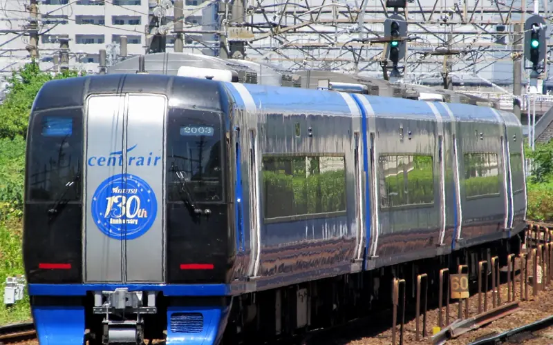
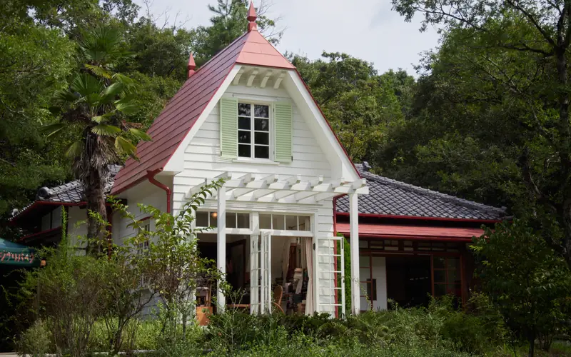
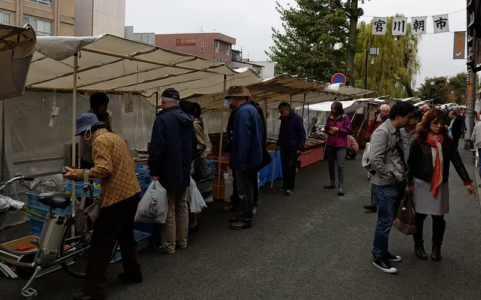

4晚
Nagoya · 2/4–2/8
名古屋名站二丁目民宿
Yoshi 的整套房源 · 91㎡ · 室內抱石牆 · 2 大 2 小
入住2/4（四）16:00 後
退房2/8（一）10:00 前
愛知縣名古屋市西區名站 2 丁目 27-1。名古屋站步行約 8 分，帶小孩與行李抓 15–20 分。
7 天 6 夜，2 大 2 小。樂高、吉卜力、名古屋城與名花之里燈海，再搭 JR 進飛驒高山吃飛驒牛、看白川鄉雪景。行程已依實際航班重排：第一天中午就開玩，最後一天晚班機，高山朝市逛完再回名古屋買伴手禮。
出發倒數 102 天
清晨 05:30 前到桃園 T2 報到。機捷首班直達車 05:30 才從台北車站發車，太趕，建議預約機場接送或自行開車。
Peach 手提行李每人合計 7kg（含安檢後買的東西）。伴手禮多的話，先在官網加購託運行李。凌晨抵台機捷已收班，請預約接送。
時間皆為日本當地時間（比台灣快 1 小時）。
Yoshi 的整套房源 · 91㎡ · 室內抱石牆 · 2 大 2 小
愛知縣名古屋市西區名站 2 丁目 27-1。名古屋站步行約 8 分，帶小孩與行李抓 15–20 分。
飛驒高山美居酒店
岐阜縣高山市花里町 4-311-1。JR 高山站步行約 4 分，雪天帶行李抓 10–15 分。2/10 退房後可請櫃台寄放行李。
時段為親子節奏估算，非確認班次。黃底是用餐，綠框是當天備案。店家與景點名稱可直接點開 Google 地圖；點菜名可看美食照片與介紹，景點照片點了可放大。

2/4 週四抵達・則武之森住名古屋
2/6 週六吉卜力公園住名古屋
2/10 週三朝市・晚班機夜裡飛回台灣到了當地按一下，從這份行程收錄的景點、餐廳和小吃裡，找出離你最近的，附步行時間和 Google 地圖導航。位置只在手機上計算，不會存下或上傳；按「導航」時才會交給 Google 地圖。
每個都已排進上面的行程，標示是哪一天吃。餐廳分店多，找離當天動線最近的即可；營業時間與公休日請出發前再查。店名可直接點開 Google 地圖。
名古屋代表菜。一碗吃三種吃法，孩子通常最愛最後的茶泡飯。
番薯切丁拌麵粉蒸成的名古屋傳統點心，表面凹凸像鬼的角而得名。Q 彈不太甜，放久會變硬，買了當天吃完。
原行程去不了（休館、下雨下雪、沒搶到票）就從這裡挑；時間多出來也可以加。公休日為一般規則，以官網為準。
排在 2/10：上午高山古街、傍晚名古屋站集中買。
整隻蝦壓成的高級仙貝，名古屋伴手禮第一名，保存期長、不怕壓。
名古屋站高島屋、站內 Kiosk、機場
名古屋傳統米糕，口感 Q 彈。有小包裝與保存期較長的款式，選常溫款。
名古屋站、機場
老舖和菓子，外皮印有葫蘆圖案，送長輩很體面。
名古屋高島屋 B1
手羽先風味、味噌豬排風味的 Pretz、薯片等，便宜好分送。先看成分沒有肉萃取。
名古屋站 Kiosk、機場
名古屋八丁味噌或高山朴葉味噌組（附朴葉），回家自己烤。選純味噌、無肉成分的款式。
高山古街、名古屋高島屋
古街酒藏可試飲，掛杉玉的就是酒藏。台灣入境每位成年人可免稅帶 1 公升酒。
三町古街 舩坂酒造、平瀬酒造等
高山名產醃菜，選真空包裝的市售品。
宮川朝市、古街漬物店
新鮮蘋果不能帶，但加工果汁與果醬可以，孩子喜歡。
宮川朝市、古街
印有合掌屋的煎餅與餅乾，小份量適合分送同學。
白川鄉荻町商店
飛驒的護身娃娃，紅色代表健康平安，也有各種顏色代表不同願望，買給孩子當紀念。
高山三町古街、白川鄉
用紫杉一刀一刀刻成的木雕，有生肖、貓頭鷹等小型款。
高山古街工藝店
透出木紋的琥珀色漆器，筷子或小盤子好帶又耐用。
高山古街
日本名牌瓷器，則武之森直營店款式多。孩子的彩繪作品需燒製，取件或寄送方式現場詢問。
ノリタケの森（2/4）
名古屋傳統紮染布，手巾、手帕輕巧好帶。
名古屋高島屋、名古屋城周邊
金色鯱魚造型的鑰匙圈、文具，名古屋代表符號。
名古屋城、金シャチ横丁
園區內才買得到的商品，看到喜歡的當場買，之後找不到。
吉卜力公園（2/6）
LEGOLAND Japan 限定盒組與小人偶。
樂高樂園（2/5）
點地圖上的標記可看說明、官網與 Google 地圖導航。用上方按鈕切換日期，地圖會自動移到當天的範圍；下方清單點地名也會跳到該地點。
此處只能顯示行政區底圖（網頁環境不允許載入外部地圖圖片）；放到一般網站上會自動換成街道圖。導航請點各地點的「Google 地圖」。
名鐵 μ-SKY 中部國際機場 ⇄ 名鐵名古屋，約 28 分，全車指定席需加購 μ 票。2/10 建議 19:00 前上車。
近鐵名古屋 → 近鐵長島（約 20–25 分）→ 園區接駁巴士（約 10 分）。名鐵巴士中心也有直達巴士，單程 ¥1,000。
JR 特急飛驒號，約 2.5 小時，約每小時一班。2/8 去程、2/10 回程都訂指定席；2/10 選 13:00–14:00 從高山發車的班次，雪天留誤點緩衝。
濃飛巴士，直達約 50 分，來回都先預約座位。巴士中心就在 JR 高山站旁。
2/11 01:30 抵達，機捷末班已過。預約機場接送最省力；或搭 24 小時的國光客運 1819 到台北車站。
07:40 起飛需 05:30 前到桃園 T2，機捷趕不上，建議預約接送或自行開車停機場。
| 項目 | 成人參考價 | 備註 |
|---|---|---|
| 名花之里 2 月預售票／現場 | ¥3,000 / ¥3,200 | 含 ¥1,000 園內金券，未就學兒童免費 |
| 名古屋 ⇄ 名花之里直達巴士 | ¥1,000／單程 | 近鐵＋接駁另計 |
| 樂高樂園（線上） | ¥4,900 起 | 依日期浮動 |
| 樂高＋SEA LIFE 聯票 | ¥5,700 起 | |
| 磁浮・鐵道館 | ¥1,200 | 備案 |
| 名古屋港水族館 | ¥2,030 | 備案 |
| ノリタケの森 館內 | ¥500 | 庭園免費，高中生以下免費，彩繪另計 |
| 吉卜力公園 | 依票種 | 2027/2 票預計 2026/12/10 14:00 開賣 |
| JR 特急飛驒號 名古屋 ⇄ 高山 | 依座席查價 | 乘車券＋特急券 |
| 濃飛巴士 高山 ⇄ 白川鄉 | 依官方票價 | 預約制 |
| Peach 託運行李 | 依官網 | 出發前線上加購較便宜 |
0 / 10 已完成